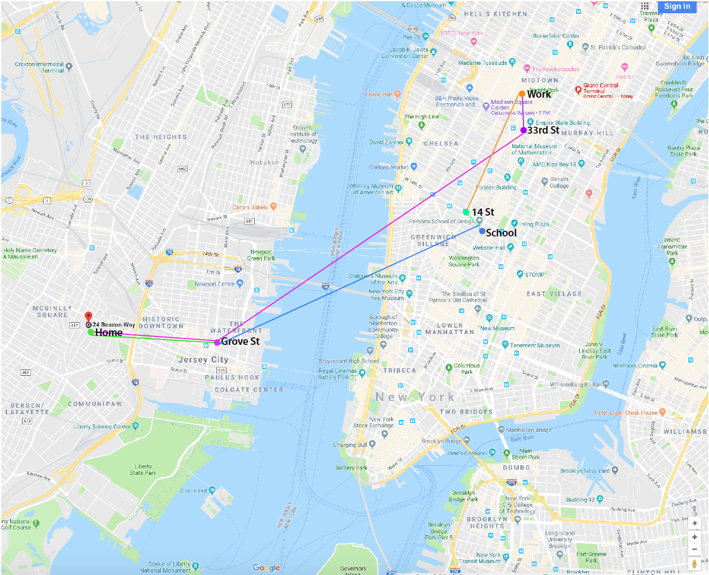

The journey that I want to present is the day of our class, Tuesday of every month. I have decided to present this journey because it’s the longest day on my schedule and I was curious to map it out and see what I take from the day when I’m busy with something every minute of my time. On Tuesday of every month I just feel like I’m in the system, that everything is so scheduled that I cannot miss any of it or the day will be ruined.
I start my day with my basic morning routing which is waking up at 7AM, brushing my teeth 7:08AM, taking a shower (7:30AM) getting ready (7:50AM) and going downstairs to the first floor 7:55AM and waiting for a shuttle bus which comes at 8AM. There is usually a line with lots of people waiting and I should wait for 2-8 min to get into a bus. While waiting I deeply breath to catch that fresh morning smell and looking on Hudson River with Skyline View. I turn my music on and keep it all the time while I’m commuting. I get on a bus around 8:08AM, it stops on Path Station Grove St around 8:18AM and I’m waiting for a path train that goes to 33rd St, with lots of people pushing each other and waiting to get on the next train. The path train stops there at 8:25AM if there are no delays. I’m on 33rd St usually around 8:40AM.
Lots of smells like floral perfumes, coffee, strong colognes and some disgusting smells are now all in one flow of people. As soon as I reach the exit, I breathe deeply again that morning smell and check out the Empire State Building to realize how lucky I am to be here in New York City. I have always dreamt to walk on my way to work and see that Empire State view of the city.
Now I need to walk from 33rd St and Broadway to my office at 42nd St and Broadway, it usually takes 7 min for me to get there but sometimes, if I have time , I stop at Au Bon Pane to get a an almond milk latte or Ms Greengenes smoothie at Juice Generation, depends on my mood. It usually takes 8 more min. I walk into an office around 8:54AM (my internship starts at 9AM). I’m working there till 6PM and getting into a path train to 14 St at 6:15PM. During that time, I feel tired and don’t really care nor about people, smells or noises. I turn my music on and try not to fall asleep. The train stops on 14 St at 6:25PM, I walk to 2 W 13 St for 5 minutes and get into a class around 6:30PM. Class ends at 9:40PM, I’m walking back to 14 St for 5 min but it seems longer because its already dark and cold outside. I wait for a Journal Sq train approximately around 20 min. Feeling happy because the day is over and I’m heading back home. I notice people who ask for money and sometimes if I have some coins, I give it to them. I’m in the train by 10:05PM sometimes by 10:15PM. It stops on Grove St at 10:35PM. I’m waiting for a shuttle that comes at 10:50PM, it stops at 11:15PM.
I’m walking to my building for 2 min, taking an elevator to 16th floor and walking into my apartment around 11:20PM. Change into my pajama, washing my face, doing some homework and get into the bed around 2AM.
